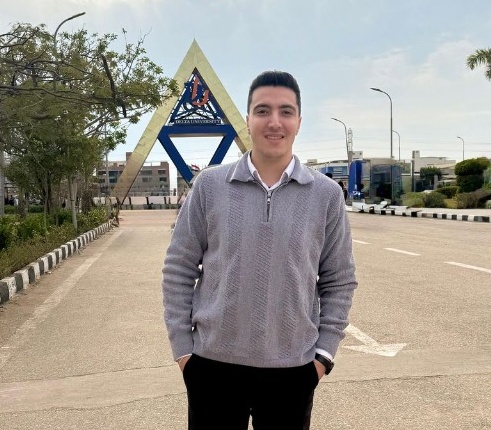
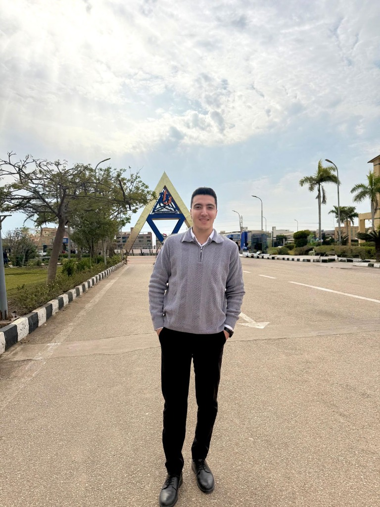
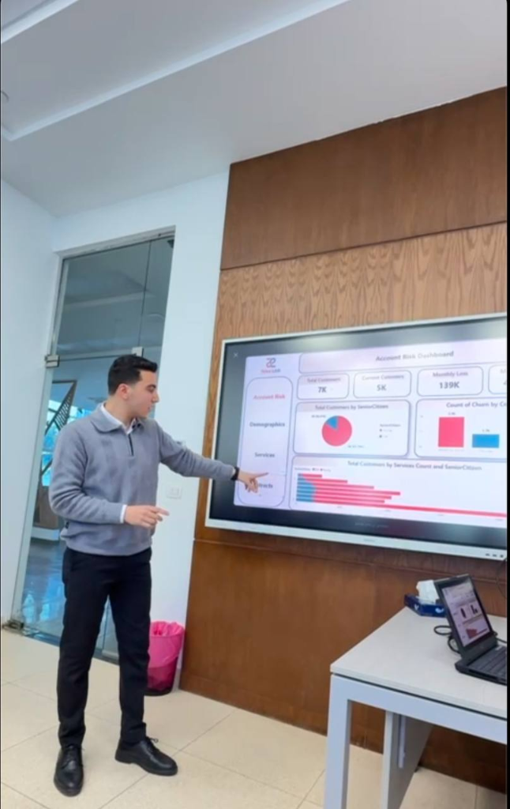
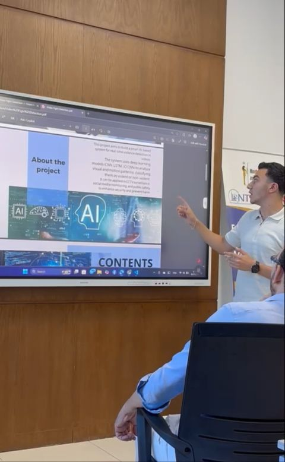
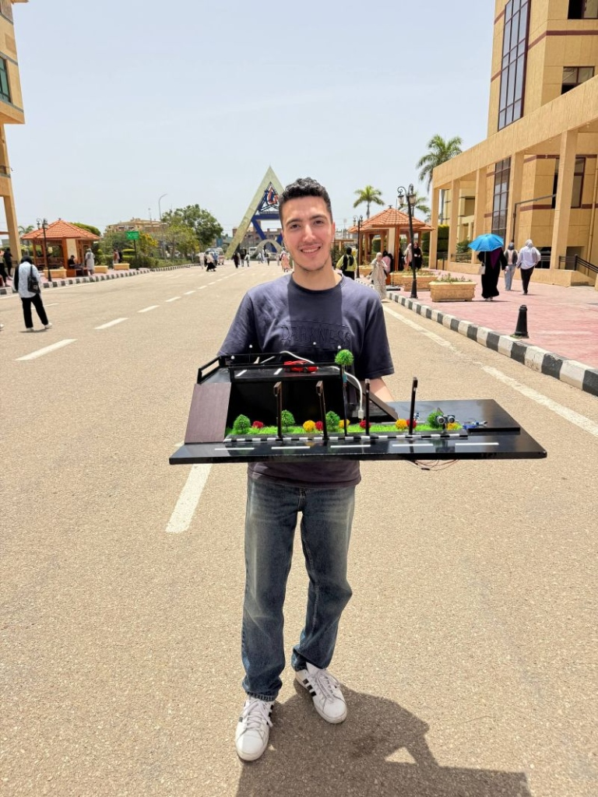
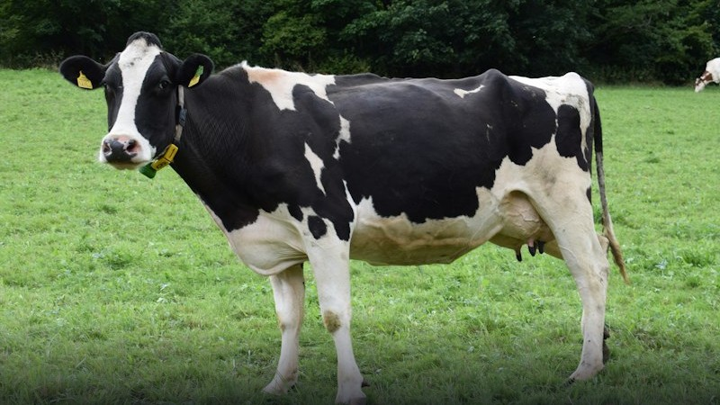
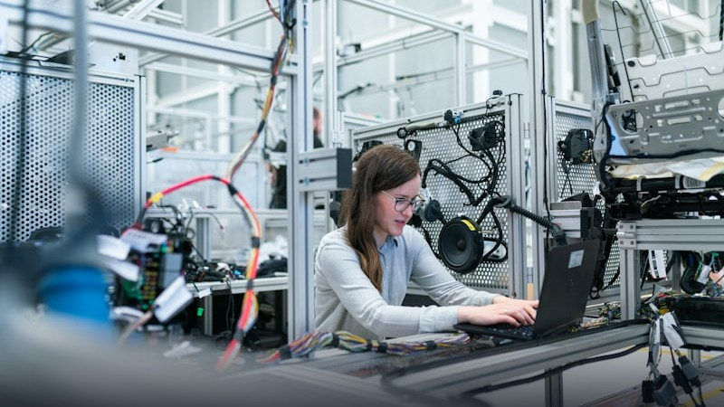
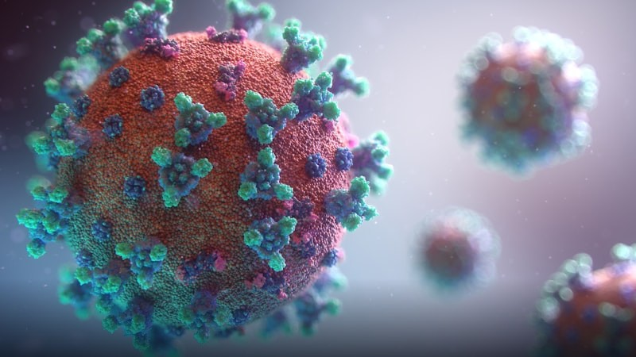
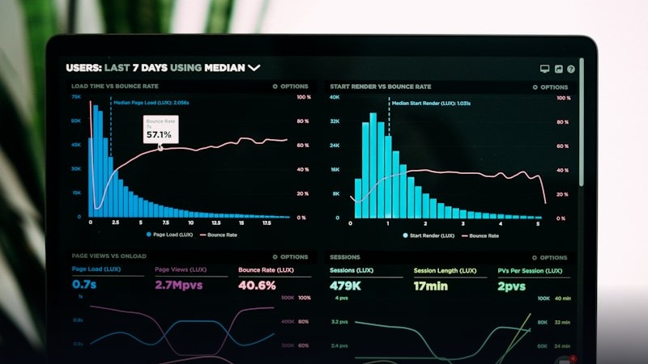
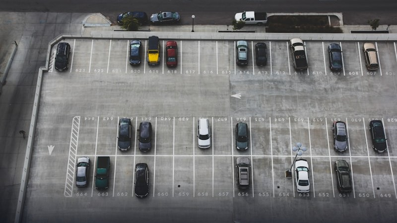

AI Engineer & Data Scientist passionate about building end-to-end predictive models, deep learning architectures, and scalable analytics pipelines. Transforming raw business data into actionable foresight.


I am an AI Engineer and Data Scientist studying Artificial Intelligence at Delta University for Science and Technology (Expected June 2027). With a practical mindset forged through real-world corporate environments like Commercial International Bank (CIB Egypt) and intensive training at NTI and BUE, I specialize in transforming raw tabular, image, and sensor data into high-value automated intelligence.
My technical sweet spot spans the entire machine learning lifecycle: from statistical EDA and advanced feature engineering to training state-of-the-art models (XGBoost, LightGBM, CNNs, Transformers) and deploying explainable, production-ready apps using Flask, Streamlit, and Power BI.
Forecasting equipment failures, customer behavior, and business KPIs with SHAP explainability.
CNNs, Spectrogram feature extraction, audio/video deepfake detection, and medical/disease diagnosis.
Complex SQL queries, Power BI interactive reports, and Python-driven analytical web applications.
Hardware prototyping, ESP32 microcontrollers, LoRa, MQTT, and smart occupancy monitoring.
Directing cross-functional engineering teams, architecting AI & Data pipelines, and delivering executive presentations.

Selected as Team Leader for our NTI Data Analysis graduation project following a strong academic record. Over the program, I directed the end-to-end development of the Account Risk Dashboard, managed cross-functional team workflows, overseen data pipeline modeling, and successfully delivered actionable customer churn insights.

Appointed as Team Leader for our NTI AI graduation project. I directed the development and deployment of an AI-powered system for automated fight detection using deep learning on video feeds. I managed the end-to-end project, overseen the integration of computer vision models, coordinated diverse workflows, and successfully presented the real-time detection solution.

Selected to lead our university IoT project. I spearheaded the complete development of an IoT-based Smart Parking System. I directed the design, managed the hardware and software integration for real-time occupancy monitoring, oversee system validation, and successfully presented a working prototype to the faculty panel.
Production-oriented machine learning pipelines, deep learning architectures, business intelligence, and embedded hardware systems.

AgriTech Vision
Predictive ML
Time Series
Executive BI
IoT HardwareDeep Learning Institute certification specializing in generative models and transformer architectures.
Comprehensive accreditation in Artificial Intelligence foundations and machine learning algorithms.
Corporate certification for benchmarking AI decision systems and optimizing banking operations.
Project-driven certification in computer vision algorithms and machine learning iterative tuning.
Foundational training covering supervised and unsupervised learning paradigms.
Expected: June 2027
Rigorous academic curriculum emphasizing core theoretical mathematics, linear algebra, statistical analysis, deep neural networks, computer vision, data structures, algorithms, and software engineering principles.
Have an AI challenge, a data problem, or an internship/role opportunity? I would love to connect!
I am actively open to AI engineering internships, data science roles, and collaborative machine learning projects.